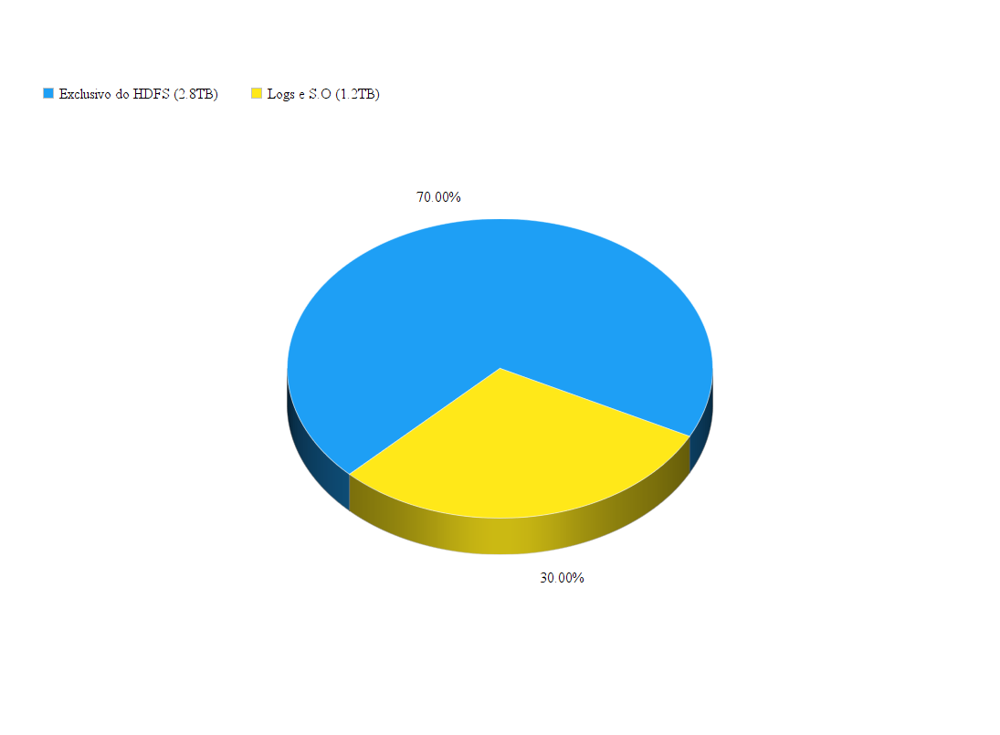

HDFS
O que é?
O HDFS é um projeto da Apache Software Foundation e um subprojeto do projeto Apache Hadoop, criado em 2005.
O Hadoop foi criado para armazenar grandes quantidades de dados, terabytes e pentabytes, e o HDFS é o sistema de armazenamento dele.
Um pouco de nomenclatura
Namespace
É uma hierarquida de arquivos e diretórios em que o usuario ou um aplicativo pode criar e armazenar arquivos nele.NameNode
O HDFS é composto de Clusters que seriam computadores interligados que realizam a mesma tarefa. O Cluster HDFS consiste em um único nó conhecido como NAMENODE.O NameNode é quem gerencia o Namespace com operações do tipo abrir, fechar e renomear e também mapeiam blocos de dados até os nó de dados.
DataNodes
São os nós de dados. Eles são capazes de criar, excluir e replicar blocos de dados.O DataNode uma réplica de um bloco que é representado por dois arquivos: o primeiro com os dados do cliente e o segundo seria os dados e selo de geração.
NameNode X DataNode
Basicamente na inicialização cada DataNode, ele se conecta com o NameNode e executa conexão ou um aperto de mão (realizando as conexões com protocolo TCP).Se o ID deles não corresponderem automaticamente realiza o desligamento da conexão. Esse ID é criado quando é formado o Namespace.
HDFS cliente
É basicamente o usuário utilizar mecanismos de interface para acessar o sistema de arquivo.Esse acesso é de forma convensional e suporta operações basicas as funções ler, escrever e apagar arquivos e também as operações de criar e de excluir diretórios.
CheckpointNode
O CheckpointNode combina periodicamente o checkpoint existente e diário para criar um novo ponto de verificação.Assim ele previni e protege os metadados do sistema de arquivos, pois o sistema pode começar desde novo o ponto de verificação, o mais recente.
BackupNode
BackupNode é parecido com o CheckpointNode pois ele é capaz de criar pontos de verificação periódicos, porém ele cria uma imagem atualizada do namespace no sistema de arquivo sempre sincronizado com o estado do NameNode.Upgrades, Snapshots do sistema de arquivos
Quando atualizamos o software pode ser que ocorra bugs de software ou erros humanos e acaba que por conta disso o sistema se corrompe.A opção de criar snapshots no HDFS tem como objetivo de minimizar os danos aos dados armazenados nos sistemas durante uma atualização.
Ele permite que o administrador salve o ponto atual do sistema de arquivo e assim a atualização não resulta na perca ou no corrompimento dos dados.
Vantagens
Portabilidade: Funciona em vários sistemas operacionais.
Escalabilidade: Armazenamento de grandes quantidades de dados distribuidos entre os clusters horizontalmente.
Tolerância a falhas: Recuperação de arquivos rápida e automática.
HDFS na prática
Configuração
Um cluster grande na Yahoo! possui em torno de 3500 nós com:
2 quad core Xeon processors @ 2.5ghz
Red Hat Enterprise Linux Server Release 5.1
Sun Java JDK 1.6.0_13-b03
4 SATA drives de 1TB
16GB RAM
1-gigabit Ethernet
Divisão do HD
 70% (2.8TB) do disco é reservado exclusivamente para o HDFS.O resto (1.2TB) para o S.O, logs etc.
Legal, mas isso significa que tenho quanto de armazenamento?
9.8PB de armazenamento

3500 * 2.8TB = 9.8PB
Tolerância a falhas

Os dados são replicados três vezes.
A probabilidade de perder um bloco durante o ano é menor que 0.005%.
Aprox. 0.8% dos nós falham no mês
O cluster é capaz de recriar 54 000 blocos de um nó falho em DOIS MINUTOS.
Benchmark
| Operação | Ops/s |
|---|---|
| Abrir um arquivo para leitura | 126 100 |
| Criar um arquivo | 5600 |
| Renomear um arquivo | 8300 |
| Deletar um arquivo | 20 700 |
| Hearbeat do DataNode | 300 000 |
| Relatório de blocos | 639 700 |
Curiosidade
Hadoop era o nome do elefante de pelúcia do filho de Doug Cutting (criador do Hadoop).Referências
Uma Introdução ao Hadoop Distributed File SystemThe hadoop distributed file system. 2010 IEEE 26th symposium on mass storage systems and technologies (MSST). IEEE, 2010.
It’s still early days for big data - ReadySpace Singapore
Obrigado !
Disponível em https://github.com/herlon214/hadoop-hdfsHerlon Aguiar | Charles Nicoletti